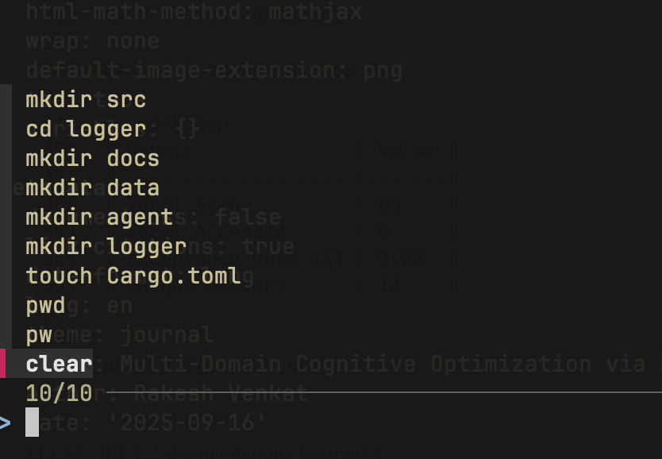
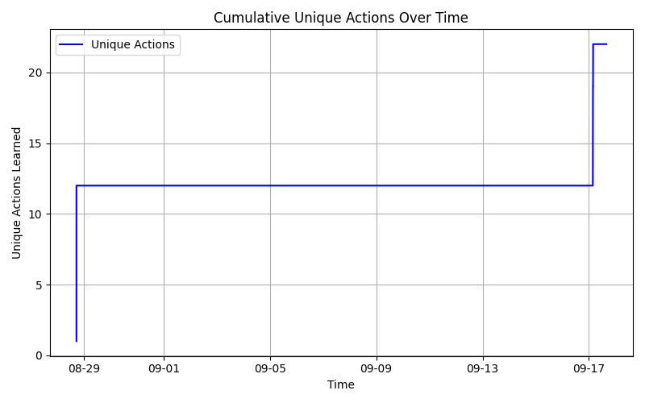
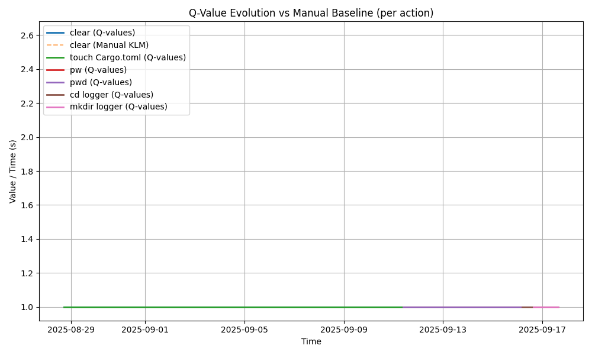
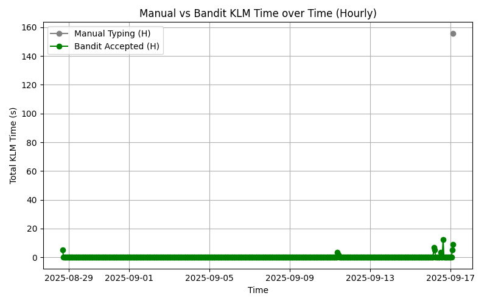

flowchart TD
subgraph CLI
A[User CLI Commands]
end
subgraph Logger
B[Rust Logger] --> C[(rl_event_pipe)]
B --> H[logger_cli.log]
end
subgraph Agent
D[Contextual Bandit Agent Python]
E[Meta-Agent future]
end
subgraph Metrics
F[Rust TUI real-time]
G[Python Analysis offline]
end
subgraph Orchestration
X[script.sh]
end
A --> B
C --> D
H --> D
D --> F
D --> G
D -.-> E
E --> F
E --> G
X --> A
X --> B
X --> D
X --> F
X --> G
Multi-Domain Cognitive Optimization via Real-Time Reinforcement Learning
Abstract
Large Language Models and automation frameworks have enabled new forms of productivity, but they rarely optimize the cognitive effort of individual users in real time. I introduce Cognitive Interaction Optimization Platform (CIOP), a multi-domain Reinforcement Learning (RL) framework designed to optimize human-computer interaction in real time. This is composed of domain-specific RL agents each focusing on a unique aspect of efficency like Cognitive Intelligence and Real-time Adaptation.
This framework had two sub components:
This manuscript focuses on version 1.0 of Autonmous Command Optimization Network (ACON) which captures real-time user behavior, suggests optimized actions, and adapts continuously. Initial results show that ACON reduces keystrokes and mental operations, aligning with the Keystroke-Level Model (KLM). I presents an early version of the platform, with code snippets, metrics, and a roadmap towards multi-domain cognitive optimization. This version (1.0) focuses on Multi-Armed Bandit Reinforcement Learning
1. Introduction
Modern AI tools prioritize automation but they overlook micro-level user interactions. In practice, productivity is often bottlenecked by repetitive keystrokes, redundant commands, or inefficient workflows. In the age of Agentic AI, there remains a need for systems that directly optimize user cognition and interaction flows.
I propose Autonmous Command Optimization Network (ACON) — a Reinforcement Learning (RL) driven platform to optimize productivity through real-time adaptation. This version targets the CLI which is chosen for its structured yet open-ended action space. While LLMs focus on semantic reasoning, ACON specifically addresses interaction efficiency.
2. Keystroke-Level Model
KLM is a classic model from Human-Computer Interaction (HCL) research that estimates tasks’ time based on the keystrokes, mental operations and system responses. ACON v1.0 adopts KLM as baseline to quantify reductions in command line cognitive load.
KLM predicts how long a user will take to complete a routine task without errors and is based on the family of Goals, Operators, Methods, Selection known as GOMS model
2.1 KLM Basics
KLM proposes six operations. For this version of ACON, we will be disregarding the pointing devices and consider that keyboard is the only input device.
Each of the elements has a time associated with it. This paper considers
- K - Keystroke by an average typist is \(\approx 40 wpm\) is 0.28s
- M - Mental preparation would be \(\approx 1.2s\)
- R - Response time would be \(\approx 0.3s\)
Keystroke-Level Model (KLM) estimates task time as:
\[Total = \sum(nk⋅tk)+∑(nm⋅tm)+∑(nr⋅tr)\]
Where:
\(n_k\) : number of keystrokes, \(t_k\) \(\approx\) 0.28
\(n_m\): number of mental operations, \(t_m\) \(\approx\) 1.2s
\(n_r\) : number of system responses \(t_r\) = \(\approx\) 0.3s
3. Example: Keystroke-Level Optimization
To illustrate ACON v1.0 in action, consider a developer navigating into a project and opening a file.
3.1 Baseline workflow & Calculations:
cd logger
cd src
nvim main.rsThis requires:
- keystrokes: \(\approx 29\) [typing all commands including spaces]
- Mental Ops: \(\approx 2\) [recall dir names, deciding sequence cd -> mkdir -> cd -> nvim ]
- System Response: \(\approx 3\) [return key after each command and wait time to finish]
\(T_{manual} = (29 \times 0.28) + (2 \times 1.2) + (3 \times 0.3) \approx 8.4 + 2.4 + 0.9 \approx 11.4s\)
3.2 CIOP suggestions & Savings:
# suggested early by bandit as it learns this folder is used frequently.
nvim logger/src/main.rs\(T_{bandit} = (23 \times 0.28) + (1 \times 1.2) + (1 \times 0.3) \approx 8.4 + 2.4 + 0.9 \approx 7.9s\)
3.3 Final Evaluation
Baseline Value: \(\approx 11.4s\)
With CIOP: \(\approx 7.9s\)
Roughly 31% Reduction
4. System Overview
CIOP v1.0 integrates:
- Rust logger: captures CLI events in real-time.
- Unified Event Pipe: streams data across CLI and other domains.
- Bandit Agent (Python): learns user-specific action preferences.
- Metrics layer: Rust TUI for real-time summaries, offline Python analysis for research plots.
4.1 CIOP Architecture
Here is the system architecture of the CIOP with CLI agent. Future roadmap will use other domains and Meta-Agents.
4.2 CIOP Flow chart
flowchart TD
subgraph User
A1[Manual Typing] -->|logs| L[logger_cli.log]
A2[Bandit Suggest] -->|accept/cancel| M[.cli_bandit_accepts]
end
subgraph Logger
L -->|command_seen| J[.cli_bandit_metrics.jsonl]
A2 -->|suggestion_shown| J
A2 -->|suggestion_accepted| J
end
subgraph PythonAgent["Python Agent"]
J -->|command_seen discovery| B[cli_bandit_agent.py]
M -->|reward updates| B
B -->|save model| N[.cli_bandit_model.json]
B -->|log q_updates| J
end
subgraph RustTUI["Rust TUI"]
J --> R[metrics.rs viewer]
end
subgraph PythonAnalysis["Python Analysis"]
J --> P1[metrics_analysis.py]
P1 -->|KLM savings & plots| IMG[image/*.png]
end
subgraph MetaAgent["Meta Agent"]
J --> P2[meta_agent.py]
end
User -->|test script| S[script.sh]
S --> Logger
S --> PythonAgent
S --> RustTUI
S --> PythonAnalysis
S --> MetaAgent
Note
- User commands are categorized as Manual Typing
4.3 CIOP Sequence Diagram
sequenceDiagram
participant User as User (CLI)
participant Logger as Rust Logger
participant Pipe as rl_event_pipe
participant Agent as Bandit Agent (Python)
participant Metrics as Rust TUI
participant Analysis as Python Metrics
User->>Logger: Type command
Logger->>Pipe: Write event (command_seen)
Logger->>Metrics: Update real-time display
Logger->>Analysis: Log command to metrics.jsonl
User->>Agent: Invoke suggestion (Ctrl-B)
Agent->>Pipe: Reads context (cwd, history)
Agent->>User: Suggest top-k commands
User->>Agent: Accept suggestion
Agent->>Metrics: Log suggestion_accepted
Agent->>Analysis: Log q_update & KLM savings
Note over Metrics,Analysis: Metrics shown real-time in Rust TUI<br>Offline analysis & plots with Python
5.Future direction:
While v1.0 focuses on single-command preference learning, later versions of CIOP will extend to composite actions or macros. For example, instead of issuing cd, ls, and nvim separately, CIOP could propose a macro such as:
ciop-open main.rs # hypothetical composite commandThis requires:
- keystrokes: \(\approx 17\)
- Mental Ops: \(\approx 1\)
- System Response: \(\approx 1\)
\(T_{manual} = (17 \times 0.28) + (1 \times 1.2) + (1 \times 0.3) \approx 4.76 + 1.2 + 0.3 \approx 6.26s\)
With macros, it will be roughly a 58% Reduction
6. Implementation & Setup
CIOP is implemented in a hybrid architecture:
Note
- Metrics is based on my current limited usage.
- The full source code will open sourced shortly.
6.1 Folder structure
ciop
├── agent
│ ├── cli_agent/
│ ├── meta_agent/
├── Cargo.toml
├── logger
│ └── src/
│ ├── data/
│ ├── logger.toml
│ ├── Cargo.toml
├── script.sh
├── README.md6.2 CLI and Arguments
Usage: logger <COMMAND>
Commands:
start Start unified logger
tail Tail live events from the pipe
search Search module logs with ripgrep
fzf Browse module logs with fzf
metrics Real time Metrics
help Print this message
Options:
-h, --help Print help
-V, --version Print version6.3 TOML Extensible configuration
[sources]
cli=true
[output]
pipe_path = "data/rl_event_pipe"
backup_file = "data/rl_logs.jsonl"
[cli]
buffer_path = ".cli_command_buffer"
capture_fields = [ "time", "session_id", "cwd", "command", "keystroke_count", "exit_code"]6.4 zsh command logging
precmd() {
local RET=$? # check for status 0 = successful
local TS=$(date -Iseconds)
# last command from history
local CMD=$(fc -ln -1)
# encode to base64
local CMD_B64=$(printf "%s" "$CMD" | base64 | tr -d '\n')
# enable this code for recording the commands
printf "%s\t%s\t%s\t%s\n" "$TS" "$PWD" "$RET" "$CMD_B64" >> ~/.cli_command_buffer
}6.5 Events rl_event_pipe.
if Path::new(pipe_path).exists() {
match OpenOptions::new()
.write(true)
.custom_flags(libc::O_NONBLOCK) // don’t block if no reader
.open(pipe_path)
{
Ok(mut pipe) => {
if let Err(e) = writeln!(pipe, "{}", json_str) {
if e.kind() != std::io::ErrorKind::BrokenPipe {
eprintln!("Failed to write to pipe: {}", e);
}
...
} 👀 Tailing cli events from data/rl_event_pipe
{"event": "suggestion_accepted", "suggestion_id": "ae2516bc", "source": "cli", "text": "pwd", "cwd": "ciop/logger", "seen": true, "accepted": true, "timestamp": "2025-09-17T03:42:22.603479Z", "keystrokes": 3, "mental_ops": 1, "predicted_time": 2.04}
{"event": "q_update", "source": "cli", "state": "/Users/rv/Documents/projects/ciop/logger", "action": "pwd", "reward": 1.0, "old_q": 1.0, "new_q": 1.0, "count": 6, "timestamp": "2025-09-17T03:42:22.604159Z", "keystrokes": 3, "mental_ops": 1, "predicted_time": 2.04}
{"cwd":"ciop/logger","event":"command_seen","exit_code":0,"keystrokes":14,"source":"cli","text":"bandit-suggest","timestamp":"2025-09-17T03:42:24.467725+00:00"}6.6 Python bandit agent:
6.6.1 Consume events.
print("Listening for events...")
for event in stream_events():
print("Received:", event)6.6.2 Loading Model
agent = load_agent_or_default(MODEL_PATH)
# generate suggestion id
suggestion_id = str(uuid.uuid4())[:8] # Short unique ID for this suggestion session
# 1) Learn from previous accepts first
processed = agent.update_from_accept_log(ACCEPT_LOG)6.6.3 Epsilon Greedy
if explore:
a = random.choice(self.actions)
strategy = "explore"
else:
# choose best by Q
a = max(self.q_values[state], key=self.q_values[state].get)
strategy = "exploit"6.6.4 fzf (Python)
def run_fzf(options):
if not options:
return ""
# call fzf, return stdout (selected line) as str
proc = subprocess.run(["fzf", "--height", "40%"], input="\n".join(options).encode(), capture_output=True)
return proc.stdout.decode().strip()6.6.5 fzf (Rust)
let status = Command::new("sh")
.arg("-lc")
.arg(format!("cat {f} | fzf --no-sort --tac --preview 'echo {{}}'", f = log_file))
.status()
.expect("Failed to run fzf via shell");
if !status.success() {
eprintln!("fzf exited with non-zero.");
}
6.6.6. fzf (zsh - Ctrl-b shortcut)
bandit-suggest() {
CMD=$(python3 ciop/agent/cli_agent/bandit_suggest.py)
if [ -n "$CMD" ]; then
# run command printed by the script
echo "Bandit suggests: $CMD"
eval "$CMD"
fi
}
# bind Ctrl-b to the function (zsh)
bindkey -s '^b' 'bandit-suggest\n'6.6.7 Bandit Suggestions

7. Metrics & Analysis
I have evaluated CIOP using metrics logged during live CLI sessions.
7.1 Real-time Rust TUI
Real time metrics are captured by running
$> ciop --metrics┌ Info ───────────────────────────────────────────────────────────────────────┐
│Metrics viewer (press 'q' to quit, 'r' to reset) │
└─────────────────────────────────────────────────────────────────────────────┘
┌Bandit Metrics Summary───────────────────────────────────────────────────────┐
│Seen: 429 Accepted: 30 AcceptRate: 6.99% UniqueActions: 20 │
└─────────────────────────────────────────────────────────────────────────────┘
┌Keystroke-Level Model (KLM)──────────────────────────────────────────────────┐
│Manual: 526 keystrokes, 54 mental, 54 sys → 228.28s │
└─────────────────────────────────────────────────────────────────────────────┘
┌Recent Metrics───────────────────────────────────────────────────────────────┐
│2025-09-17T15:44:57.586287Z | cli | q_update | - │
│ pwd │
│2025-09-17T15:44:57.586542Z | cli | q_update | - │
│ clear │
│2025-09-17T15:44:57.588184Z | cli | command_seen | ciop/agent/cli_agent. │
│ clear │
│2025-09-17T15:44:57.588251Z | cli | command_seen | ciop/agent/cli_agent │
│ ... │
└─────────────────────────────────────────────────────────────────────────────┘
┌Raw Log (debug view)──────────────────────────────────────────────────────────┐
│{"event":"q_update","source": "cli","state": "ciop/agent/cli_agent","action" │
│{"event":"q_update","source": "cli","state": "ciop/agent/cli_agent", "action":│
│{"event":"q_update","source": "cli","state": "ciop", "action": "pw", "reward" │
...7.2 Acceptance Rate Over Time

7.3 Unique Actions Learned

7.4 Q-Value by Action

7.5 Final Q-Values

7.6 Q-Value vs Baseline

7.7 Summary Metrics
| Metric | Value |
|---------------------|-------|
| Total Seen | 430 |
| Total Accepted | 30 |
| Acceptance Rate (%) | 9.09 |
| Unique Actions | 22 |7.8 Metrics (Daily)
| Time | Seen | Accepted | Acceptance Rate (%) |
|-------------------|------|----------|---------------------|
| 2025-08-28 00:00 | 33 | 3 | 9.09 |
...
| 2025-09-11 00:00 | 33 | 3 | 9.09 |
...
| 2025-09-13 00:00 | 0 | 0 | 0.00 |
| 2025-09-14 00:00 | 0 | 0 | 0.00 |
| 2025-09-16 00:00 | 196 | 16 | 8.16 |
| 2025-09-17 00:00 | 158 | 8 | 5.06 |
...7.9 Metrics (Hourly)
| Time | Seen | Accepted | Acceptance Rate (%) |
|-------------------|------|----------|---------------------|
| 2025-08-28 07:00 | 33 | 3 | 9.09 |
| 2025-09-16 00:00 | 0 | 0 | 0.00 |
| 2025-09-16 04:00 | 44 | 4 | 9.09 |
...
| 2025-09-16 05:00 | 53 | 3 | 5.66 |
| 2025-09-16 06:00 | 22 | 2 | 9.09 |
| 2025-09-16 07:00 | 77 | 7 | 9.09 |
| 2025-09-16 23:00 | 0 | 0 | 0.00 |
...
| 2025-09-17 02:00 | 43 | 3 | 6.98 |
| 2025-09-17 03:00 | 95 | 5 | 5.26 |
| 2025-09-17 05:00 | 20 | 0 | 0.00 |
...7.10 KLM Savings
=== KLM Savings Summary ===
manual_total_time : 155.76
bandit_total_time : 52.8
time_saved : 102.96
num_manual : 29
num_suggestions : 307.11 KLM Hourly

7.12 KLM Daily

7.13 Final Calculations
Here is the table showing the Scenarios vs Savings for limited action space.
| Scenarios | k | n | m | Time (s) | Savings |
|-------------------|----|---|---|----------|---------|
| Manual | 29 | 2 | 3 | 11.4 | - |
| Bandit suggestion | 23 | 1 | 1 | 7.9 | 31% |
| Future composite | 17 | 1 | 1 | 6.2 | 58% |8. Discussion
The results show ACON v1.0 learns to prioritize high-value commands (ls, pwd) while discarding low-value ones. Acceptance rates improve over time, validating the feasibility of real-time cognitive optimization.
9. Limitations:
Small action space.
Early-stage logging (CLI only).
Bandit only; no temporal credit assignment.
10. Roadmap:
Meta-agent: Coordination across multiple agents.
JAX : Use JAX to scale RL architecture.
Remote RL Training : Replace existing pipe for multi-machine/remote training.
qSwitch : Integrate with my context switcher project
Integrate with qCAP - Integrate with my Cognitive Autonomous Platform
12. Conclusion
This paper presents CIOP v1.0, a real-time RL system for cognitive optimization at the CLI. This manuscript demonstrates feasibility, presents early metrics, and lays out the vision for multi-domain expansion. With early testing using Multi-Arm Bandit, I could see reduction upto \(\approx 31\%\).
I have evaluated per-command time using the Keystroke-Level Model. Using conservative constants and compared three cases. For the example sequence, the KLM predicts \(\approx 11.4s\) when typed manually and \(\approx 7.94s\) when the bandit suggests the prefilled commands with a time reduction of \(\approx 31\%\). A hypothetical composite macro would reduce the time further to \(\approx6.3s\) with \(\approx 58\%\) reduction assuming the same mental effort.
13. References
Hill, David. 1984. “A Bibliography to Human-Computer Interaction: Concepts, Methods and Problems.” October 1984.
Hu, Kaizhuo. 2024. “Comprehensive Introduction and Analysis of the UCB Algorithm in Multi-Armed Bandit Problems.” Highlights in Science, Engineering and Technology 94 (April): 247–50. https://doi.org/10.54097/wm3zkc73.
Langford, John, Yahoo Research, and Tong Zhang. 2007. “The Epoch-Greedy Algorithm for Contextual Multi-Armed Bandits.” Advances in Neural Information Processing Systems 20 - Proceedings of the 2007 Conference, January.